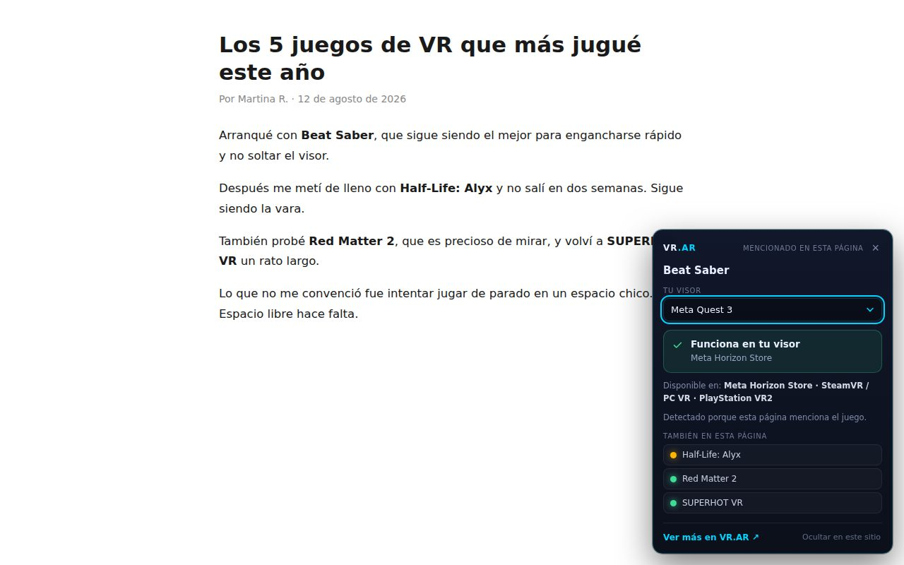

¿Ese juego de VR funciona en tu visor?

Estás leyendo una nota sobre un juego de realidad virtual, o mirando su página en Steam, y aparece la duda de siempre: ¿esto anda en el visor que tengo? Averiguarlo son cuatro búsquedas y diez minutos, porque cada juego sale en unas plataformas sí y en otras no, y las tiendas no siempre lo dicen claro.
Hicimos una extensión de Chrome para que no tengas que hacer ninguna de esas búsquedas. Elegís tu visor una sola vez y, cuando una página menciona un juego que tenemos en el catálogo, aparece una tarjeta chica abajo a la derecha con la respuesta. Si no detecta nada, no aparece nada.
No pide cuenta ni registro. Funciona en Chrome, Edge y cualquier navegador basado en Chromium.
Agregar a Chrome →Qué te dice exactamente
La respuesta no es un sí o un no pelado, porque en VR eso casi nunca alcanza. Un mismo juego puede correr nativo en tu visor, funcionar solo si tenés una PC que lo mueva, o directamente no existir para vos. La tarjeta distingue los tres casos y te dice en qué tienda está: Meta Horizon Store, SteamVR, PlayStation VR2 o la tienda de PICO.
Y hay un cuarto caso, que es el que más nos importa: cuando todavía no verificamos ese juego para tu modelo, la extensión lo dice en vez de inventar una respuesta. El catálogo tiene 91 juegos verificados uno por uno, plataforma por plataforma, y no están todos los que existen. Un dato de compatibilidad equivocado es peor que no tener el dato: te hace comprar algo que no vas a poder usar.
Dónde funciona
En Steam y PlayStation Store anda desde que la instalás, sin permisos extra. En cualquier otra página —blogs, notas, reseñas, foros— funciona si vos se lo habilitás con un botón dentro de la extensión. Lo hicimos así a propósito: pedir acceso a toda la web en el momento de instalar es incómodo y no nos parece que tenga que ser obligatorio para probar algo.
Los visores soportados son Meta Quest 3, Quest 3S y Quest 2, PlayStation VR2, PICO 4 y PICO 4 Ultra, Valve Index y HTC Vive.
Qué datos toma
Ninguno. Todo el trabajo ocurre dentro de tu navegador: la extensión lee el título de la página que estás viendo, lo compara contra un catálogo que viaja incluido en el paquete, y muestra el resultado. No hay cuentas, ni analítica, ni historial, ni envío de información a ningún servidor. Lo único que se guarda, en tu propia máquina, es qué visor elegiste. Está todo detallado en la política de privacidad de la extensión.
Respondé 7 preguntas rápidas y encontrá el que encaja con vos en 60 segundos.
Hacer el test de VR Finder →La extensión es gratuita y no contiene publicidad. Mirá nuestra Política de privacidad.